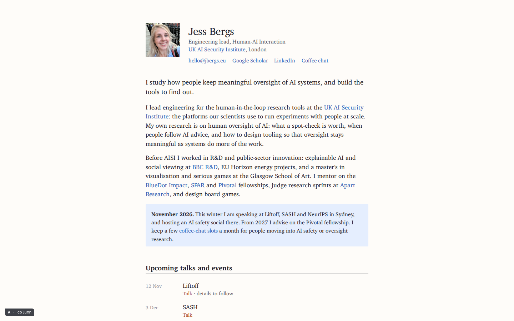
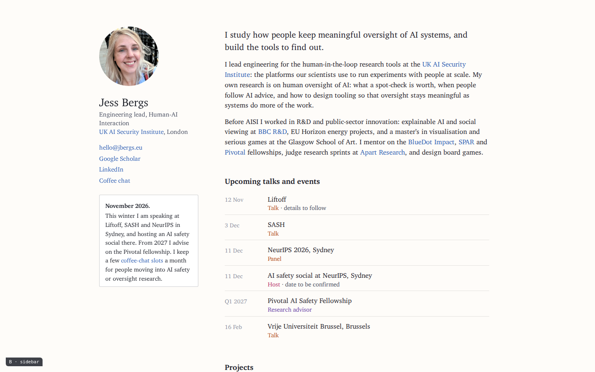
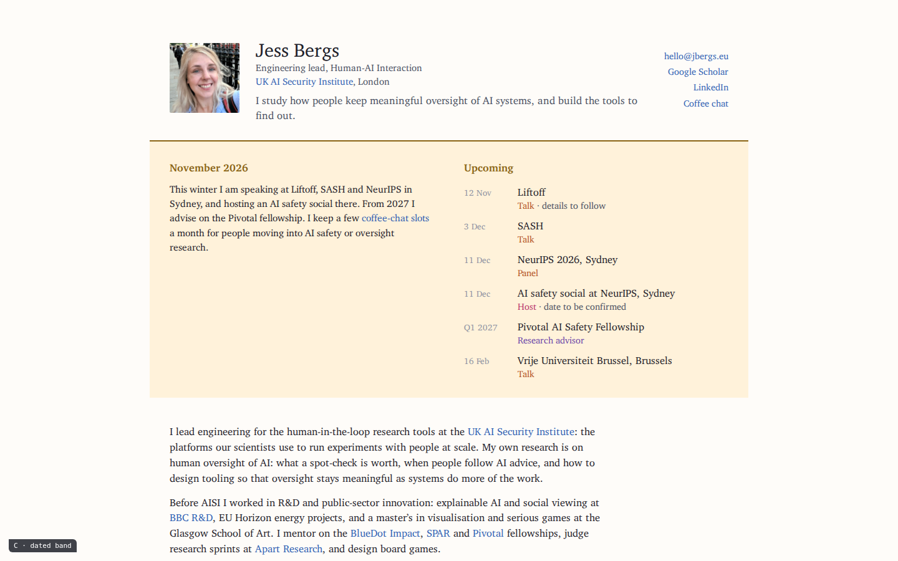
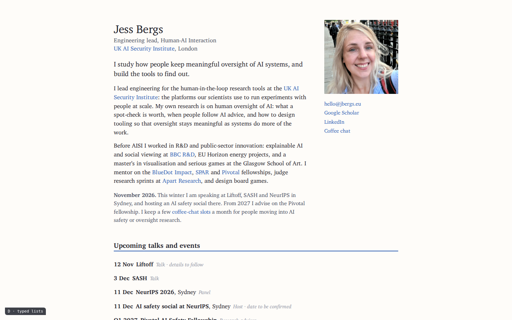
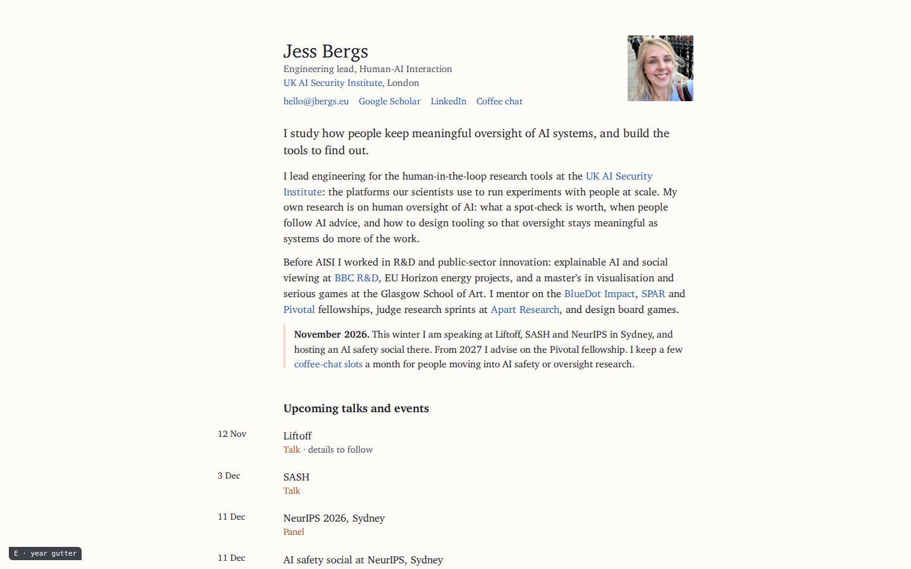

A · Column
One measured column, photo beside the name. Every section is a dated list; the status note is a pale blue block. The plain faculty page, typeset.
Same content and the same order on all five: photo and contacts, a one-line statement and a short bio, a dated status note, upcoming talks and events, projects, past talks and conferences, mentoring and service, last updated. They differ only in how that is set. The conventions they follow are in practices.md; the pages that fed them are in the reference gallery.

One measured column, photo beside the name. Every section is a dated list; the status note is a pale blue block. The plain faculty page, typeset.

Identity pinned on the left with the status note boxed under the contacts, like a recruiting notice. Rules between rows.

After Bostrom's grey band: a header row, then a tinted band with this month's note on the left and Upcoming on the right. Projects in two columns, talks as a list.

After Norvig: each entry is a bold title plus a small italic type label (Paper, Talk, Panel) and one line, with a stamp-sized image at the left. Headings carry a blue rule.

One gutter runs down the whole page: dates for upcoming, the year written once per group for projects and talks. Photo top right, status note with an apricot rule.